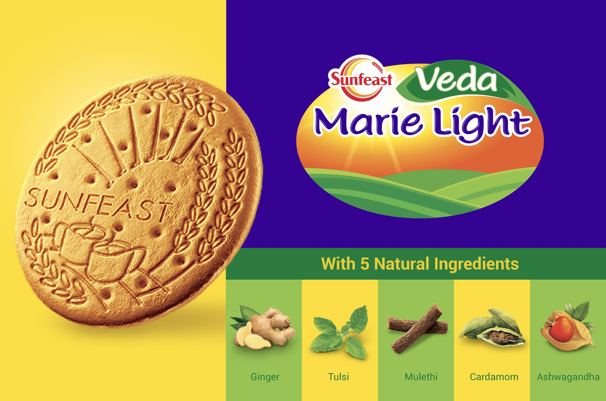
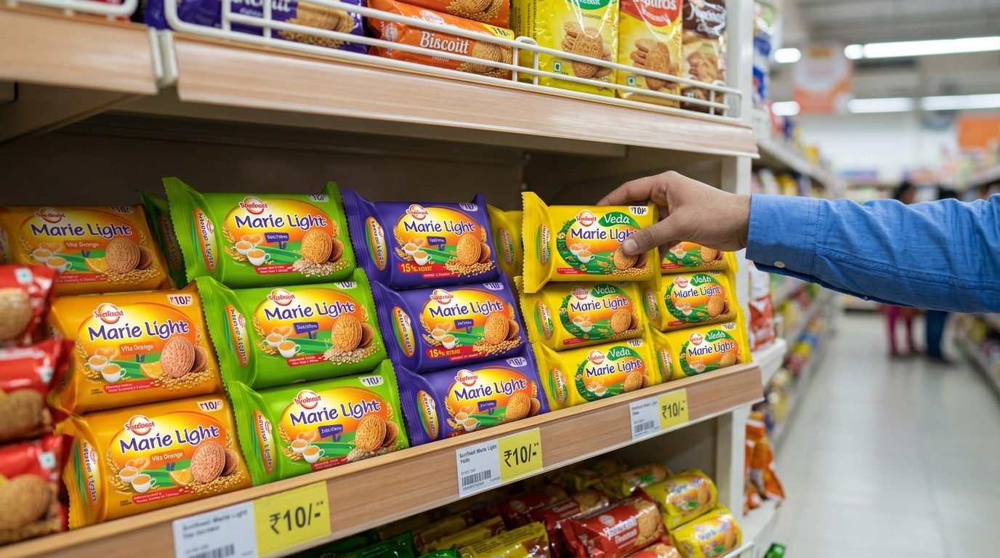

ITC Sunfeast Marie
Modernizing the packaging of one of India's highest-volume biscuit brands.
Elephant Design, Pune
Task at hand
Modernizing Sunfeast Marie Light, from the house of ITC — one of India's highest-volume household staple biscuit brands. The objective was to refresh the Marie Light portfolio architecture across diverse variants (Active, Oats Fibre, Vita Orange, and Veda) to stay culturally relevant to modern wellness-conscious families while maintaining instant recognition across retail aisles.
Challenge
High-equity risk: altering visual anchors on a massive-volume legacy biscuit risks confusing millions of daily shoppers in crowded general trade stores. Communicating efficacy and wellness — clearly differentiating functional sub-brands like Sunfeast Veda Marie Light, which incorporates 5 natural Ayurvedic ingredients (Ginger, Tulsi, Mulethi, Cardamom, Ashwagandha) — without making the pack feel clinical or pharmaceutical.



Sunfeast Marie shelf simulation — animated.